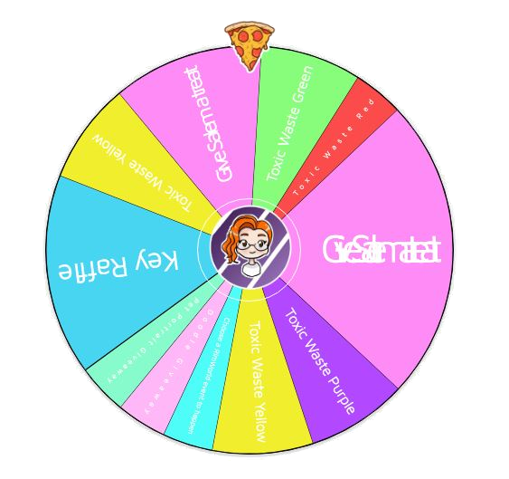

<!DOCTYPE html>
<html>
    <head>
        <!-- <link href="https://fonts.googleapis.com/css?family=Lobster+Two&display=swap" rel="stylesheet"> -->
        <link rel="stylesheet" href="./core.css" title="Core CSS with default styles"/>
        <script src='https://cdnjs.cloudflare.com/ajax/libs/socket.io/2.0.3/socket.io.js' type='text/javascript'></script>
        <style type="text/css">
            .backstroke {
                z-index: 10;
            }
            
            .forestroke {
                z-index: 20;
            }

            .backstroke, .forestroke {
                position: absolute;
                width: 100%;
                /* left: 0px;  */ /* stick it wherever it was positioned by default */
                /* top: 0px;  */
            }
            #tiltifyMiniGoalDisplayBox {
                background-color: #65a9d1;
                color: white;
                border-radius: 20px;
                display: inline-block;
                font-family: 'Segoe UI', Tahoma, Geneva, Verdana, sans-serif;
                padding: 10px;
                min-height: calc(1em + 20px);
                background-image: url('icicles.png'), linear-gradient(rgb(0,0,0,0), rgb(0,0,0,0));
                background-repeat: repeat-x;
                background-size: auto 40px, 0 !important;
                background-position: left -2px, 0 0 !important;
                font-size: 25px;
                font-weight: bold;
            }
            #tiltifyMiniGoalDisplayBox > * {
                margin-top: 20px;
            }

            .countValue::before, .goalValue::before {
                content: '$';
            }

            .wheel {
                height: 50px;
                float: left;
                position: relative;
                top: -25px;
            }
        </style>
        <script type="module">
            import initialize from './core.js';
            import TiltifyGoal from './TiltifyGoal.js';
            import Logger from './Logger.js';
            import TiltifyScanner from './TiltifyScanner.js';


            let theLogger = new Logger();
            let theScanner = new TiltifyScanner({
                scanDelay: 30000
            });
            let theGoal = new TiltifyGoal({
                moduleId: 'tiltifyMiniGoal',
                displayTitle: ' Wheel Spin',
                settingsTitle: 'Tiltify Mini-Goal',
                step: 'any',
                min: 0,
                useModulo: true,
                tiltifyScanner: theScanner,
                logger: theLogger
            });

            let listener = event => {
                console.log(event);
            };
            theScanner.addListener(listener);

            let config = {
                hash: {
                    goal: {
                        type: 'showElm',
                        target: 'tiltifyMiniGoalDisplayBox',
                        default: false
                    }
                },
                urls: {
                    goal: {
                        description: 'Show the goal',
                        builder: base => `${base}#urls=0&goal`
                    }
                },
                modules: [
                    theGoal,
                    theLogger,
                    theScanner
                ]
            };
            initialize(config);
            theScanner.start();
        </script>
    </head>
    <body>
    </body>
</html>